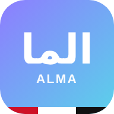

عاشت اليمن · «نبدأ من حيث انتهى الآخرون»
نقل الملفات بين الجوالات والكمبيوتر بدون برامج، وضغط ومسح وتعديل ملفات PDF بدون إنترنت.
← 🧾صوّر 4 فواتير يدوية في اللقطة، فيقرأ رقم كل فاتورة الأحمر ومبلغها ويجمعها في جدول لـ Excel.
← 📿دعاء اليوم، وموضوع وقصة وحكمة لكل يوم من الشهر الهجري، وفهرس الصحيفة.
←